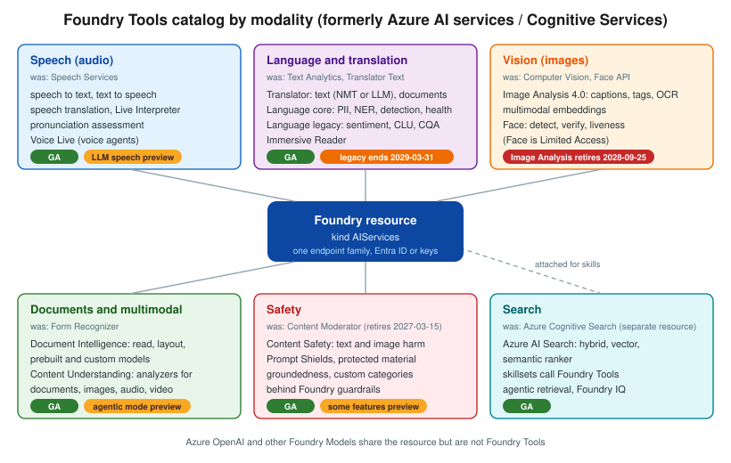

Foundry Tools
|
This content was generated with the assistance of AI and should be verified against the official documentation before being relied on in production. |
This sub-section is current as of 2026-10-06. It targets Azure CLI 2.90.0 and Bicep 0.47.16, like the rest of the
Azure section, plus the REST api-version and SDK versions stated at the top of each page. Code samples use
DefaultAzureCredential and managed identity by default, with Python and C# on every tool page, Java wherever a
GA Java SDK exists, and at least one curl call per tool. Every code block links the official page it derives
from.
What Foundry Tools are
Foundry Tools are Microsoft’s prebuilt, task-specific AI services: speech recognition and synthesis,
translation, text analytics, image analysis, document extraction, multimodal content analysis, content moderation
and search. Each has its own REST API and SDKs, and most run on one Foundry resource
(Microsoft.CognitiveServices/accounts with --kind AIServices). Official product names follow the pattern
Azure Speech in Foundry Tools, Azure Language in Foundry Tools and so on; Content Safety is still titled Azure
AI Content Safety.
The catalog has been renamed twice:
| Old name | New name | Note |
|---|---|---|
Cognitive Services |
Azure AI services |
Renamed in 2023. |
Azure AI services |
Foundry Tools |
Renamed in 2025, with the move to Microsoft Foundry. |
Azure AI Studio, Azure AI Foundry |
Microsoft Foundry ( |
The portal and platform that hosts projects, models, agents and tools. |
Form Recognizer |
Document Intelligence |
Resource kind is still |
Computer Vision |
Azure Vision |
Resource kind is still |
Two meanings of "tools"
-
Foundry Tools, the product catalog documented here.
-
Agent tools, what a Foundry agent can call: function calling, MCP servers, code interpreter, file search, Azure AI Search and the managed MCP servers and connectors of the Foundry Tools Catalog. They overlap only where a Foundry Tool is exposed to an agent, covered on Using Foundry Tools from Agents (MCP and Toolbox).
Azure OpenAI is not a Foundry Tool. It is Azure OpenAI in Foundry Models, part of the Foundry Models catalog. It shares the Foundry resource’s endpoint family and keys, and several tools call model deployments (Translator LLM translation, Content Understanding, agentic retrieval), but this sub-section doesn’t document models or the Foundry Agent Service themselves.
The catalog

| Tool | Modality | Status | Typical jobs | Page |
|---|---|---|---|---|
Azure Speech |
Audio |
GA (LLM speech preview) |
Transcription, captions, synthesis, speech translation, pronunciation scoring, voice agents |
Speech to Text, Text to Speech, Speech Translation, Voice Live |
Azure Translator |
Text, documents |
GA |
Text translation (NMT or LLM), document translation, custom models |
|
Azure Language |
Text |
GA (legacy features end 2029-03-31) |
PII redaction, entities, language detection, health; sentiment, summaries, CLU, question answering |
|
Azure Vision |
Images |
Deprecated (retires 2028-09-25) |
Captions, tags, smart crops, OCR, image embeddings |
|
Azure Face |
Images |
GA (Limited Access), SDKs preview |
Detection, verification, liveness |
|
Document Intelligence |
Documents |
GA |
OCR, layout, invoices, receipts, IDs, custom models, RAG ingestion |
|
Content Understanding |
Documents, images, audio, video |
GA (agentic mode preview) |
Field extraction and classification with your own schema, video chapters |
|
Azure AI Content Safety |
Text, images |
GA (some features preview) |
Moderation, Prompt Shields, groundedness, protected material |
|
Azure AI Search |
Text, vectors |
GA (separate resource) |
Hybrid and vector search, enrichment, agentic retrieval |
|
Immersive Reader |
Text |
GA (own resource kind) |
Read-aloud and reading aids embedded in a web page |
Use-case quick finder
| I want to… | Tool and feature | Page |
|---|---|---|
transcribe a call or a podcast |
Speech to text, batch or fast transcription |
|
add live captions to an event |
Speech to text, real-time |
|
narrate an audiobook sample |
Text to speech, batch synthesis |
|
translate a live talk |
Speech translation, Live Interpreter |
Speech Translation, Pronunciation Assessment and Other Speech Features |
score a learner’s pronunciation |
Pronunciation assessment |
Speech Translation, Pronunciation Assessment and Other Speech Features |
build a voice agent |
Voice Live |
|
translate product descriptions |
Translator text, NMT |
|
translate a Word file and keep its layout |
Document translation |
Document Translation, Custom Translator and Adaptive Translation |
redact PII before an LLM call |
Language PII |
|
detect the language of a message |
Language detection |
|
measure review sentiment |
Language sentiment (legacy) or a Foundry Model |
Language: Sentiment, Summarization, CLU and Question Answering |
answer FAQs with approved text |
Custom question answering |
Language: Sentiment, Summarization, CLU and Question Answering |
generate alt text for an image |
Vision caption (or a Foundry Model) |
|
verify a live selfie against an ID |
Face liveness with verification |
|
read text from a scanned receipt |
Document Intelligence Read or receipt model |
|
extract invoice fields |
Document Intelligence invoice model |
|
chunk PDFs for RAG |
Document Intelligence layout to Markdown |
Document Intelligence: Custom Models, Classification and RAG Ingestion |
extract contract terms I describe in words |
Content Understanding analyzer |
|
chapter and summarize a video |
Content Understanding video |
|
moderate user reviews |
Content Safety text analysis |
|
block jailbreaks |
Content Safety Prompt Shields |
|
search a catalog with keywords and vectors |
Azure AI Search hybrid search |
|
give an agent speech or PII tools |
Azure Speech and Language MCP servers |
|
offer read-aloud with reading aids |
Immersive Reader |
Reading path
-
Choosing a Foundry Tool (or a Foundry Model) — prebuilt tool vs LLM vs custom model.
-
Resources, Endpoints and Authentication — the resource every page uses.
-
Networking, Security and Responsible AI and Pricing, Quotas, Containers and Monitoring — production concerns shared by every tool.
-
The tool pages you need, from the quick finder above.
-
Using Foundry Tools from Agents (MCP and Toolbox) and End-to-End Scenarios: Combining Foundry Tools — combining tools.
-
Immersive Reader, Video Indexer and Retired Services — what has been retired.
Bookshelf additions
The Azure section’s running example, Bookshelf, gains these resources in this sub-section:
| Concern | Name | Used for |
|---|---|---|
Foundry resource ( |
|
Every tool page; keyless access from |
Foundry project |
|
Agents, connections and the Foundry SDK |
Azure AI Search service |
|
Catalog index and the support knowledge base |
Blob containers in |
|
Podcast and video files, audio previews; supplier invoices |
Single-service Vision resource ( |
|
Cover captions and alt text. A separate resource because Image Analysis captions aren’t available in every
region; it lives in East US, not |
Single-service Immersive Reader resource ( |
|
Read-aloud sample chapters. Immersive Reader isn’t part of the multi-service |
Model deployments |
|
LLM translation, Content Understanding, agentic retrieval |
Map of this sub-section
Bibliography and cheat sheet
The sources consulted for every page are listed in the Foundry Tools group of the section bibliography. A one-page printable summary is on Foundry Tools Cheat Sheet.
Related pages
-
AI, Data and IoT Services Overview places Foundry Tools next to the other Azure data and AI services.
-
Azure introduces the Azure section and the Bookshelf scenario.
-
Voice Agents, RAG Systems in Production and AI Security & Responsible AI cover the vendor-neutral side of speech, retrieval and AI security.